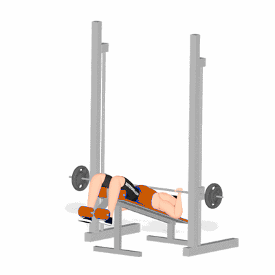

Supino Declinado na Barra Guiada Smith

Exercício de musculação realizado na barra guiada (Smith) em posição declinada para fortalecimento e hipertrofia da porção inferior do peitoral, com ativação secundária de deltoides e tríceps. Indicado para praticantes de todos os níveis.
Ficha Técnica
Tipo: Musculação
Grupo Muscular: Peito
Aparelho: Nenhum
Músculos: Nenhum
Como realizar
- Ajuste o banco em posição declinada sob a barra guiada e posicione-se com os pés firmes no suporte;
- Segure a barra com pegada pronada, alinhada ao peito inferior;
- Desengate o mecanismo de trava mantendo controle da barra;
- Inspire e desça a barra de forma controlada até tocar levemente o peito inferior, mantendo os cotovelos em posição confortável;
- Expire e empurre a barra para cima até extensão parcial dos cotovelos, sem travar totalmente;
- Reengate a trava ao final da série e repita conforme prescrição.
 RC STORE
RC STORE